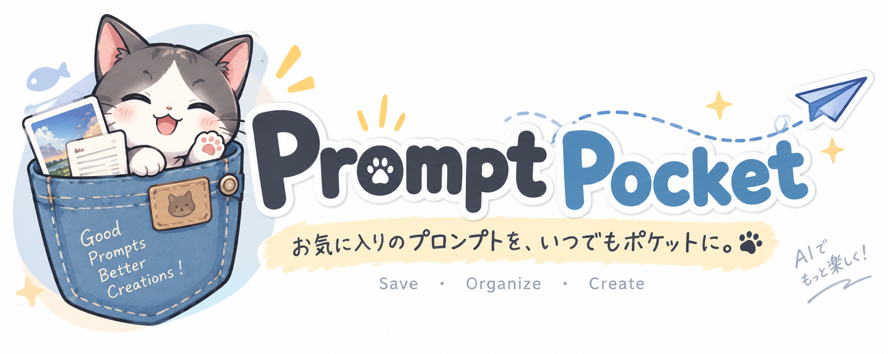
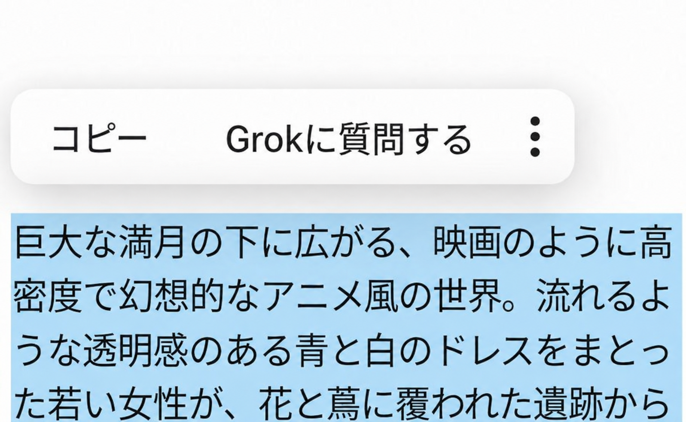
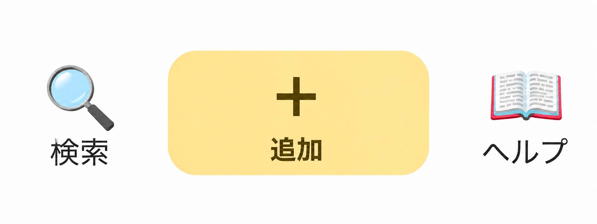
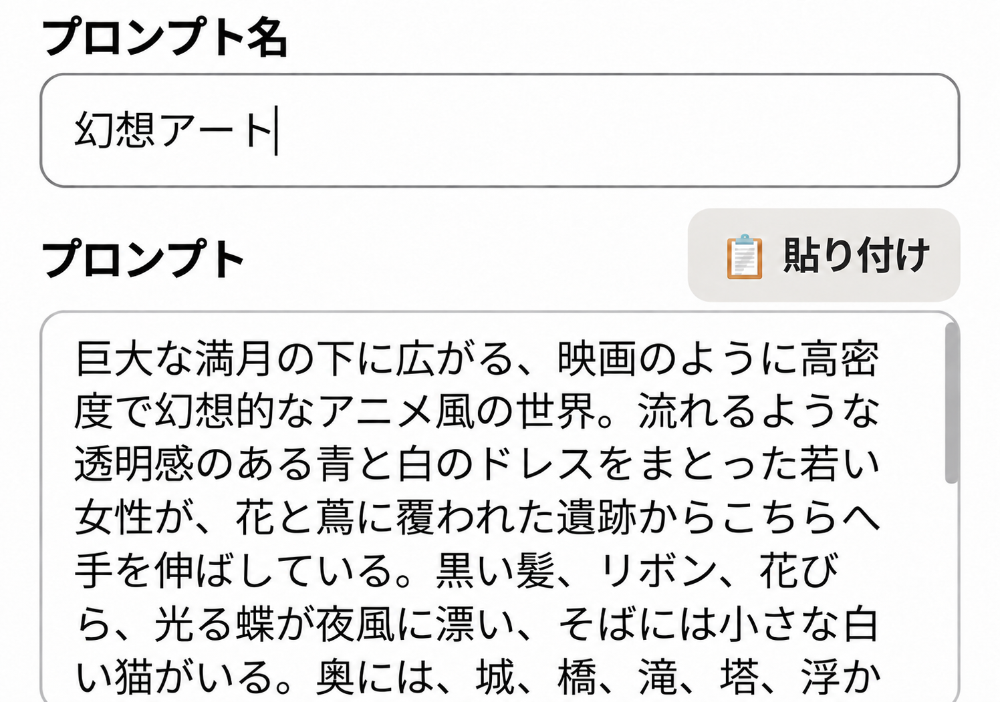
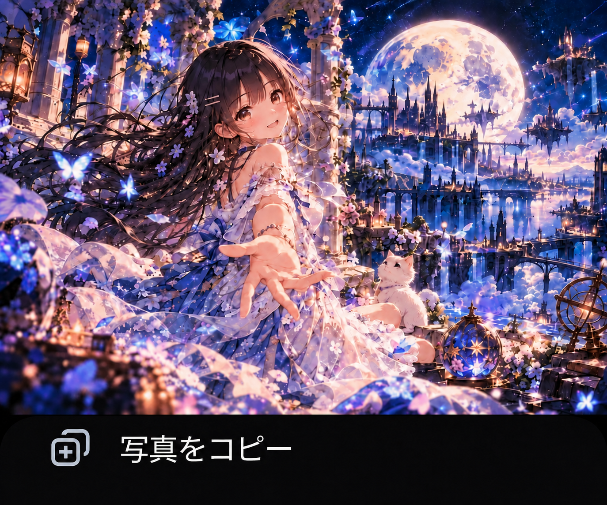
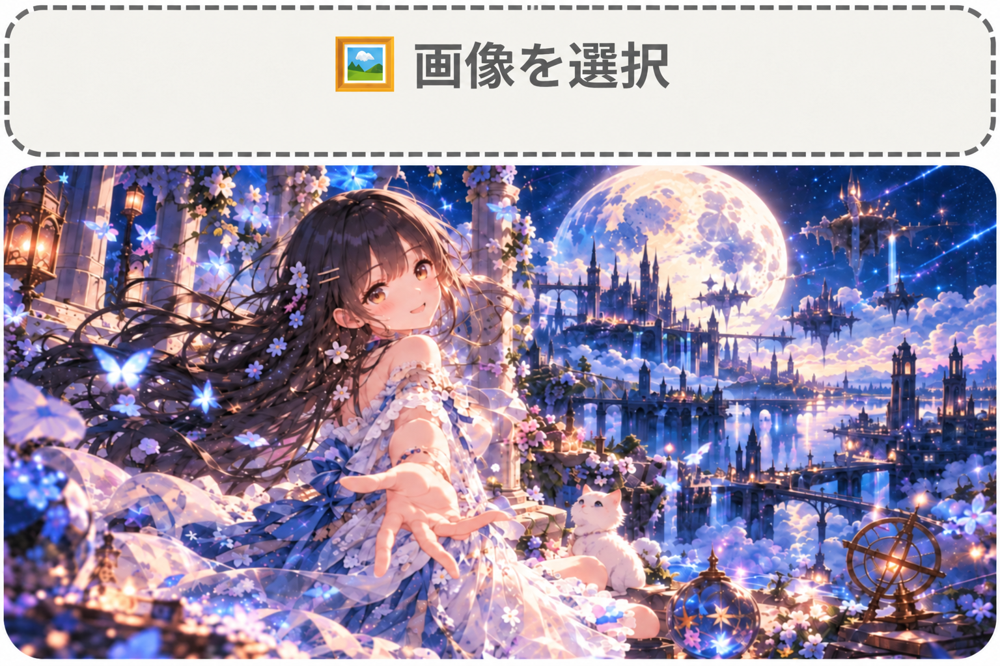
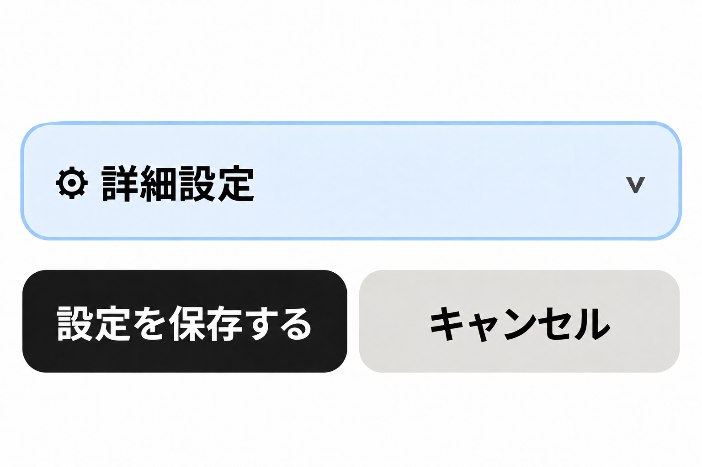
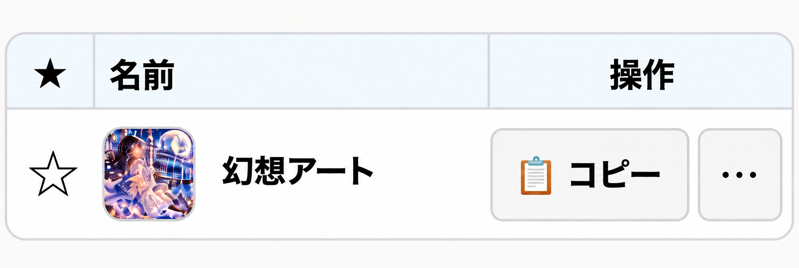

簡単に使い方を説明します。

まずは、公開されているプロンプトをコピーしましょう。

［＋追加］を長押しします。

プロンプト入力欄に自動的に貼り付けられます。自由に編集し、このプロンプトの名前も入力します。

次に写真をコピーしてきます。

長押しすると画像が挿入されます。

必要な場合は詳細設定をクリックして設定します。設定が終わりましたら、保存をして終了です。

メイン画面にプロンプトがカードとして追加されます。
詳しい使い方はヘルプをご覧ください。